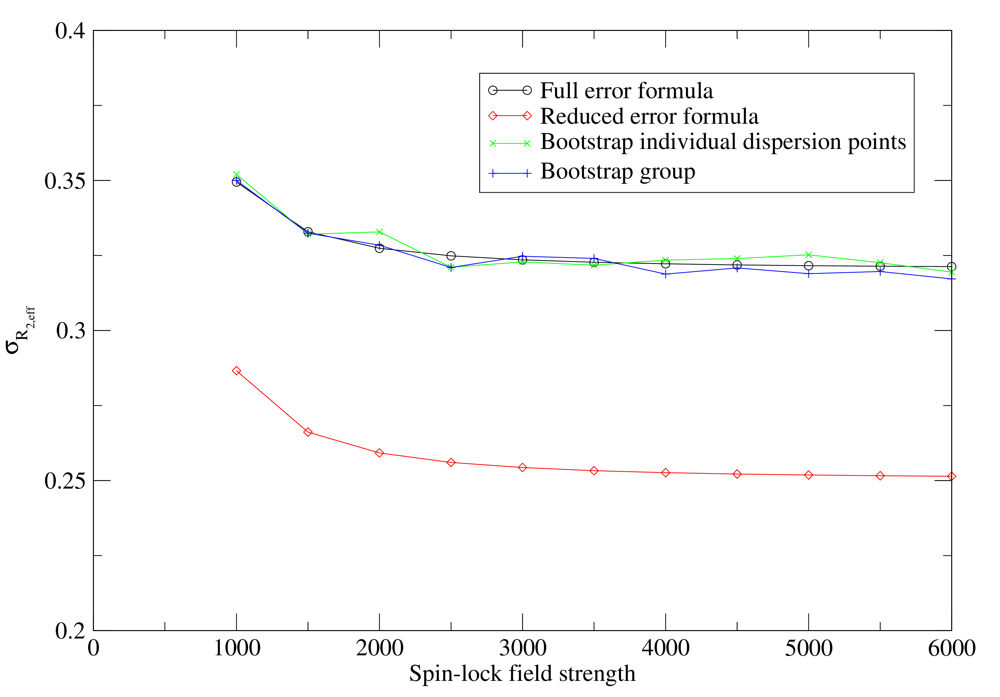

Next: The model for no Up: The base dispersion models Previous: The base dispersion models Contents Index
This is the simplest of all models in that the dispersion component of the base data - the peak intensity values - is not modelled. It is used to determine either the
R2eff or
R1 values and errors as required for the base data for all other models. It can be selected by setting the model to `R2eff'. Depending on the experiment type, this model will be handled differently. The
R2eff/
R1
values and errors as required for the base data for all other models. It can be selected by setting the model to `R2eff'. Depending on the experiment type, this model will be handled differently. The
R2eff/
R1 values determined can be later copied to the data pipes of the other dispersion models using the appropriate user functions.
values determined can be later copied to the data pipes of the other dispersion models using the appropriate user functions.
For the fixed relaxation time period CPMG-type experiments, the
R2eff/
R1 values are determined by direct calculation using the formula
values are determined by direct calculation using the formula
 |
(theparentequation.2) |
The values and errors are determined with a single call of the calc user function. The
R1 version of the equation is essentially the same:
version of the equation is essentially the same:
 |
(theparentequation.3) |
Errors are calculated using the formula
In a number of publications, the error formula from Ishima and Torchia (2005) has been used. This is the collapse of Equation 10.4 by setting
 to zero:
to zero:
This is not implemented in relax as it can be shown by simple simulation that the formula is incorrect (see Figure 10.1). This formula significantly underestimates the real errors. The use of the same I0 value for all dispersion points does not cause a decrease in the R2eff error but rather a correlation in the errors.
|
 |
For the variable relaxation time period type experiments, the
R2eff/
R1 values are determined by fitting to the simple two parameter exponential as in a
R1 or
R2 analysis.
Both
R2eff/
R1
values are determined by fitting to the simple two parameter exponential as in a
R1 or
R2 analysis.
Both
R2eff/
R1 and the initial peak intensity I0 are optimised using the minimise user function for each exponential curve separately.
Monte Carlo simulations are used to obtain the parameter errors.
and the initial peak intensity I0 are optimised using the minimise user function for each exponential curve separately.
Monte Carlo simulations are used to obtain the parameter errors.